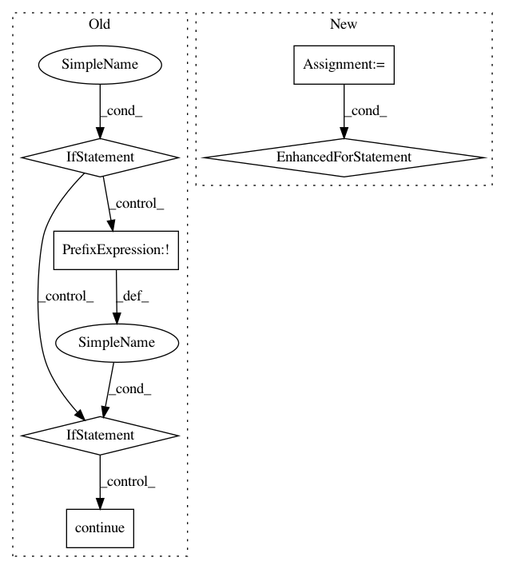

70d3aa1b8c12d614f2ca1b1b550bb605d8c8a506,debug_toolbar/middleware.py,DebugToolbarMiddleware,process_request,#DebugToolbarMiddleware#,60
Before Change
def process_request(self, request):
__traceback_hide__ = True // noqa
if self.show_toolbar(request):
toolbar = DebugToolbar(request)
for panel in toolbar.panels:
panel.enabled = panel.dom_id() not in request.COOKIES
if not panel.enabled:
continue
panel.enable_instrumentation()
panel.process_request(request)
self.__class__.debug_toolbars[threading.current_thread().ident] = toolbar
def process_view(self, request, view_func, view_args, view_kwargs):
__traceback_hide__ = True // noqa
toolbar = self.__class__.debug_toolbars.get(threading.current_thread().ident)
if not toolbar:
After Change
return
response = None
toolbar = DebugToolbar(request)
for panel in toolbar.enabled_panels:
panel.enable_instrumentation()
for panel in toolbar.enabled_panels:
response = panel.process_request(request)
if response:
break
In pattern: SUPERPATTERN
Frequency: 3
Non-data size: 6
Instances
Project Name: jazzband/django-debug-toolbar
Commit Name: 70d3aa1b8c12d614f2ca1b1b550bb605d8c8a506
Time: 2013-11-15
Author: aymeric.augustin@m4x.org
File Name: debug_toolbar/middleware.py
Class Name: DebugToolbarMiddleware
Method Name: process_request
Project Name: pyprob/pyprob
Commit Name: 22b907cc151f4ae9ec9ff95e2438836ef5660b60
Time: 2020-08-06
Author: atilimgunes.baydin@gmail.com
File Name: pyprob/model.py
Class Name: Model
Method Name: _traces
Project Name: pyprob/pyprob
Commit Name: 22b907cc151f4ae9ec9ff95e2438836ef5660b60
Time: 2020-08-06
Author: atilimgunes.baydin@gmail.com
File Name: pyprob/model.py
Class Name: Model
Method Name: posterior